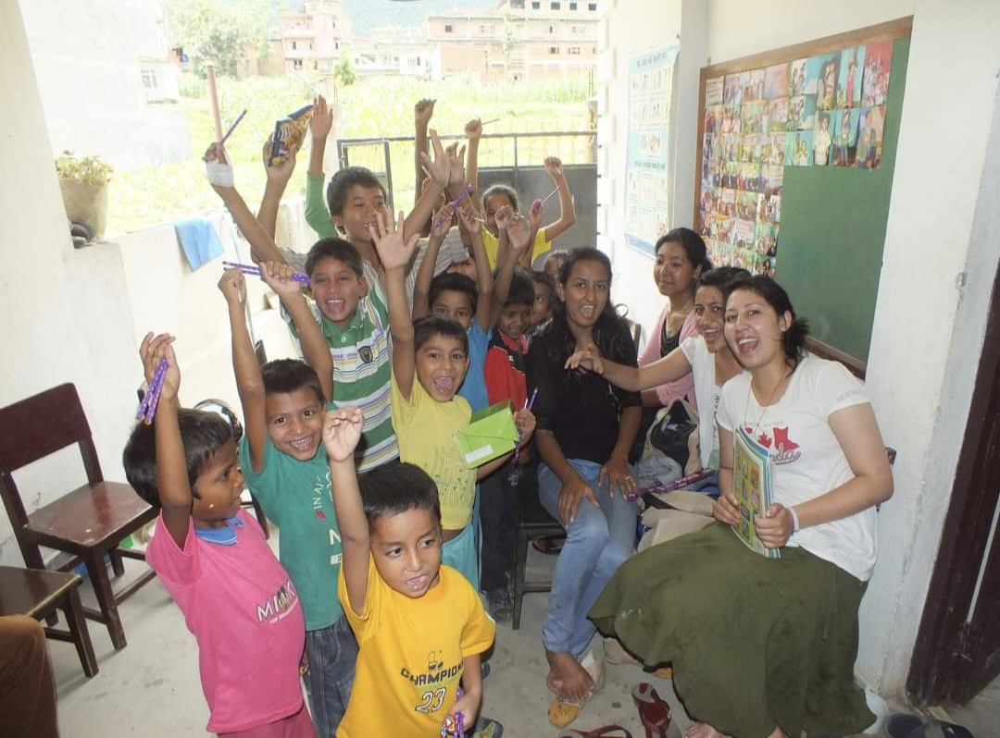

Social Projects & Events

Academic Outreach & Social Impact
- School Supplies Distribution in Nepal - Coordinated the distribution of paper pencils to schools across Nepal, reducing reliance on wooden pencils in support of an environmental safety initiative aimed at lowering deforestation rates and promoting sustainable learning materials.
- Cultural Representation of Nepal - Actively participated in diverse cultural programs to represent Nepalese heritage, fostering cross-cultural understanding and global cultural exchange.
Community & Environmental Initiatives
- Tree Plantation Drives - Led and actively participated in multiple tree plantation campaigns, contributing to the environment by promoting greener landscapes and improving air quality in local communities.
- Animal Welfare Support - Organized and executed programs to feed stray dogs and donated to caretakers, providing essential resources for the care and well-being of animals in need.
- Street and River Clean-Up Initiatives - Spearheaded the clean-up of local streets and rivers, promoting hygiene, sustainability, and environmental conservation through community engagement.

Corporate Social Responsibility
- Waterforall Initiative - Led the collection of donations through the sale of eco-friendly merchandise, supporting economically disadvantaged countries lacking access to clean water resources. Successfully raised awareness about water scarcity and environmental conservation.
- Nacht der Technik Participation - Volunteered in a public outreach event aimed at educating diverse audiences on vacuum technology, providing demonstrations and tours.
- Family Day Event Management - Organized the Leybold Family Day event to foster employee engagement and strengthen workplace culture. Managed giveaways and organized activities for employees and their families.
- Diversity and Inclusion Advocacy - Contributed to Leybold's diversity initiatives by writing articles and conducting interviews with female leaders, advocating for women's empowerment by sharing inspirational stories within the company.